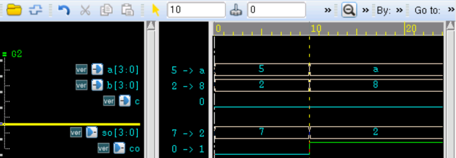
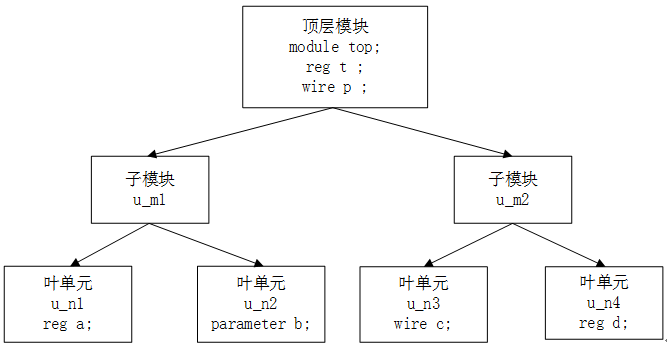

キーワード：インスタンス化、generate、全加算器、階層アクセス
あるモジュール内で別のモジュールを参照し、そのポートを関連付けて接続することをモジュールのインスタンス化と呼びます。モジュールのインスタンス化により、記述の階層が構築されます。信号ポートは位置または名前で関連付けることができ、ポート接続もいくつかのルールに従う必要があります。
名前付きポート接続
この方法では、インスタンス化するモジュールのポートを外部信号と名前で接続します。ポートの順序は任意で、参照するモジュールの宣言ポートの順序と一致している必要はなく、ポート名と外部信号が一致していればよいです。
以下は 1bit 全加算器を1回インスタンス化する例です：
インスタンス
.Ai (a[0]),
.Bi (b[0]),
.Ci (c==1'b1 ? 1'b0 : 1'b1),
.So (so_bit0),
.Co (co_temp[0]));
一部の出力ポートを外部に接続する必要がない場合、インスタンス化時に未接続（フローティング）にしたり、削除したりすることもできます。一般的に、input ポートはインスタンス化時に削除できません。削除するとコンパイルエラーになります。output ポートはインスタンス化時に削除できます。例：
インスタンス
full_adder1 u_adder0(
.Ai (a[0]),
.Bi (b[0]),
.Ci (c==1'b1 ? 1'b0 : 1'b1),
.So (so_bit0),
.Co ());
//output ポート Co を削除
full_adder1 u_adder0(
.Ai (a[0]),
.Bi (b[0]),
.Ci (c==1'b1 ? 1'b0 : 1'b1),
.So (so_bit0));
順序ポート接続
この方法では、インスタンス化するモジュールのポートを、モジュール宣言時のポート順序に従って外部信号とマッチングして接続します。位置は厳密に一致させる必要があります。例えば、1bit 全加算器を1回インスタンス化するコードは次のように変更できます：
full_adder1 u_adder1(
a[1], b[1], co_temp[0], so_bit1, co_temp[1]);
このコードは記述上のスペースを比較的少なく抑えられますが、コードの可読性が低下し、デバッグもしにくくなります。大規模な設計ではポートが多数ある場合があり、ポート信号の順序が時々変更される可能性もあります。そのような場合に順序ポート接続でモジュールをインスタンス化するのは明らかに不便です。そのため、通常は名前付きポート方式でモジュールをインスタンス化することをお勧めします。
ポート接続ルール
入力ポート
モジュールのインスタンス化時、モジュール外部から見ると、input ポートは wire 型または reg 型の変数に接続できます。これはモジュール宣言とは異なります。モジュール内部から見ると、input ポートは wire 型変数でなければなりません。
出力ポート
モジュールのインスタンス化時、モジュール外部から見ると、output ポートは wire 型変数に接続する必要があります。これはモジュール宣言とは異なります。モジュール内部から見ると、output ポートは wire 型または reg 型変数にできます。
入出力ポート
モジュールのインスタンス化時、モジュール外部から見ると、inout ポートは wire 型変数に接続する必要があります。これはモジュール宣言と同じです。
フローティングポート
モジュールのインスタンス化時、一部の信号を外部信号と接続・相互作用させる必要がない場合、それらをフローティングにすることができます。つまり、ポートのインスタンス化箇所を空白のままにします。上記の例で言及されています。
output ポートをフローティングにする場合、インスタンス化時にそれを削除することもできます。
input ポートをフローティングにすると、フローティング信号の論理機能はハイインピーダンス状態（論理値 z）になります。ただし、インスタンス化時にフローティングの input ポートを削除することは通常できません。削除するとコンパイルエラーになります。例：
インスタンス
full_adder4 u_adder4(
.a (a),
.b (b),
.c (),
.so (so),
.co (co));
インスタンス
full_adder4 u_adder4(
.a (a),
.b (b),
.so (so),
.co (co));
一般的に、input ポートはフローティングにしないことをお勧めします。他の外部接続がない場合は定数を代入します。例：
インスタンス
.a (a),
.b (b),
.c (1'b0),
.so (so),
.co (co));
ビット幅のマッチング
インスタンス化ポートと接続信号のビット幅が一致しない場合、ポートは符号なし数の右詰めまたは切り詰めによってマッチングされます。
モジュール full_adder4 で、ポート a とポート b のビット幅が両方とも 4bit の場合、以下のコードのインスタンス化結果は次のようになります：u_adder4.a = {2'bzz, a[1:0]}, u_adder4.b = b[3:0] 。
インスタンス
.a (a[1:0]), //input a[3:0]
.b (b[5:0]), //input b[3:0]
.c (1'b0),
.so (so),
.co (co));
ポートの接続信号タイプ
ポートに接続する信号タイプは、1）識別子、2）ビット選択、3）部分選択、4）上記タイプの結合、5）入力ポートに使用する式、のいずれかです。
もちろん、信号名はポート名と同じでも構いませんが、それらの意味は異なり、それぞれ2つのモジュール内の信号を表します。
generate を使用したモジュールのインスタンス化
同じモジュールを複数インスタンス化する場合、1つずつ手動でインスタンス化するのは面倒です。generate 文を使用して複数のモジュールを繰り返しインスタンス化すると、プログラムの記述プロセスを大幅に簡素化できます。
4つの 1bit 全加算器を繰り返しインスタンス化して 4bit 全加算器を構成するコードは次のとおりです：
インスタンス
input [3:0] a , //adder1
input [3:0] b , //adder2
input c , //input carry bit
output [3:0] so , //adding result
output co //output carry bit
);
wire [3:0] co_temp ;
//最初のインスタンス化モジュールは一般的な形式と異なる場合があるため、個別にインスタンス化する必要があります
full_adder1 u_adder0(
.Ai (a[0]),
.Bi (b[0]),
.Ci (c==1'b1 ? 1'b1 : 1'b0),
.So (so[0]),
.Co (co_temp[0]));
genvar i ;
generate
for(i=1; i<=3; i=i+1) begin: adder_gen
full_adder1 u_adder(
.Ai (a[i]),
.Bi (b[i]),
.Ci (co_temp[i-1]), //前の全加算器の桁上がり出力は次の全加算器の桁上がり入力です
.So (so[i]),
.Co (co_temp[i]));
end
endgenerate
assign co = co_temp[3] ;
endmodule
testbench は次のとおりです：
インスタンス
module test ;
reg [3:0] a ;
reg [3:0] b ;
//reg c ;
wire [3:0] so ;
wire co ;
//簡単なドライブ
initial begin
a = 4'd5 ;
b = 4'd2 ;
#10 ;
a = 4'd10 ;
b = 4'd8 ;
end
full_adder4 u_adder4(
.a (a),
.b (b),
.c (1'b0), //ポートには定数を接続できます
.so (so),
.co (co));
initial begin
forever begin
#100;
if ($time >= 1000) $finish ;
end
end
endmodule // test
シミュレーション結果は次のとおりで、4bit 全加算器が正常に動作していることがわかります：

階層アクセス
各インスタンス化モジュールの名前、各モジュールの信号変数などは、特定の識別子を使用して定義されます。階層設計全体において、各識別子は一意の位置と名前を持ちます。
Verilog では、一連の.記号を使用して各モジュールの識別子を階層的に区切って接続することで、どこからでも完全な階層名を指定して設計全体の識別子にアクセスできます。
階層アクセスはシミュレーションでよく見られます。
例えば、次のような階層設計がある場合、リーフセル、サブモジュール、トップモジュール間の信号は相互にアクセスできます。
インスタンス
a = top.u_m2.u_n3.c ;
//u_n1 モジュール内で top モジュールの信号にアクセス
if (top.p == 'b0) a = 1'b1 ;
//top モジュール内で u_n4 モジュールの信号にアクセス
assign p = top.u_m2.u_n4.d ;

前述の章のシミュレーションでも、多かれ少なかれ関連する階層アクセスが行われています。例えば『過程連続代入』の節では、トップレベルのシミュレーション激励 test モジュールで次のような文が使用されています：
wait (test.u_counter.cnt_temp == 4'd4) ;
クリックしてノートを共有
<p style="font-size:14px;">ノートはこの記事の内容の拡張である必要があります！</p><br> <p style="font-size:12px;"><a href="../tougao.html" target="_blank">記事の投稿はこちらをクリック</a></p> <p style="font-size:14px;"><a href="./runoob-user-test-intro.html" target="_blank">登録招待コードの取得方法</a></p> <h3 class="text-muted"><i class="fa fa-info-circle" aria-hidden="true"></i> ノートを共有する前に<a href=".." class="runoob-pop">ログイン</a>が必要です！</h3> <p><a href="./runoob-user-test-intro.html" target="_blank">登録招待コードの取得方法</a></p>